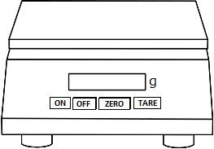
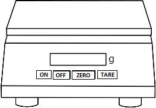

DETERMINATION OF PARTICLE SIZE DISTRIBUTION USING HYDROMETER
Objective:
To determine the particle size distribution, finer than 75-micron sieve, by sedimentation analysis using a density hydrometer and then plot the grain size distribution curve.
Apparatus used:
Density hydrometer, Glass measuring cylinders of 1000ml capacity, Sieve, Weighing balance, Distilled water, Dispersing agent, Electric blender etc.
Description
Based on Stoke’s law, the hydrometer method of sedimentation analysis is used to determine the particle size distribution of soils finer than 75-micron.
 

Take 750ml of water in a 1000ml glass measuring cylinder, and note down the water level reading.
Immerse the hydrometer into the cylinder and note down the reading of water level. (The difference in the 2 readings gives the volume of the hydrometer.

Initial reading (ml)= 750 ml
Final reading (ml) = 835 ml
Final - Initial
ml
Volume of hydrometer, Vh =
Measure the diameter of the measuring cylinder and find the area of the measuring cylinder.

Diameter of measuring jar, d = 6.4 cm
Variables Used in Calculations
Diameter of measuring jar, d = 6.4 cm
cm2
π× d2⁄4
Area of measuring jar, A =
Place the hydrometer on a clean sheet and trace the instrument along with its graduations.
Measure the height of the bulb, H.
Distance between neck and bottom of bulb, H = 16.6 cm

Measure the height between hydrometer reading and neck, h.
Distance between hydrometer reading and neck, h = 12 cm

Calculate effective depth He for corresponding corrected hydrometer reading, Rh values.
Variables Used in Calculations
Distance between neck and bottom of bulb, H = 16.6 cm
Distance between hydrometer reading and neck, h = 12 cm
Volume of hydrometer, Vh = 85 ml
Area of measuring jar, A = 32.2 cm2
H + 1⁄2 (h - Vh⁄A )
Effective depth corresponding to each reading, He =
cm
Similarly other values are calculated
| Corrected hydrometer reading, Rh (cm) | Distance between hydrometer reading and neck, h (cm) | Effective depth corresponding to each reading, He (cm) |
| 0.995 | 12 | 18.98 |
| 1 | 10.5 | 17.48 |
| 1.005 | 9 | 15.98 |
| 1.01 | 7.5 | 14.48 |
| 1.015 | 6 | 12.98 |
| 1.02 | 4.65 | 11.63 |
| 1.025 | 3.25 | 10.23 |
| 1.03 | 2 | 8.98 |
| 1.035 | 0.6 | 7.58 |
Draw the calibration curve between He and Rh on a normal graph sheet.
| Corrected hydrometer reading, Rh (cm) | Distance between hydrometer reading and neck, h (cm) | Effective depth corresponding to each reading, He (cm) |
| 0.995 | 12 | 18.98 |
| 1 | 10.5 | 17.48 |
| 1.005 | 9 | 15.98 |
| 1.01 | 7.5 | 14.48 |
| 1.015 | 6 | 12.98 |
| 1.02 | 4.65 | 11.63 |
| 1.025 | 3.25 | 10.23 |
| 1.03 | 2 | 8.98 |
| 1.035 | 0.6 | 7.58 |
Soil Sample Preparation
STEP 9Weigh accurately 50 grams of soil passing through a 75-micron sieve.
50.0
Add 2-3 drops of dispersing agent and 70 ml of water and mix thoroughly.

Transfer this mixture to the blender jar and blend the mixture for 5mins.

Carefully transfer the mixture to a measuring cylinder and add distilled water to make the volume exactly equal to 1000 ml.
Sedimentation test with hydrometer
STEP 13Shake the contents in the measuring jar and allow it to stand. Immerse the hydrometer into the jar gently, a little below the free surface, and allow it to float freely. Immediately start the stopwatch.
After 24 hours the hydrometer reading is noted
| Time Elapsed, t (min) | Hydrometer reading, (cm) |
Calculate the corrected hydrometer readings after applying meniscus correction.
Variables Used in Calculations
Meniscus correction, Cm = +0.001
Hydrometer reading, Rh' (cm)= 1.016
Rh = Rh'+ Cm
Corrected Hydrometer reading, Rh =
cm
Similarly other values are calculated
Find out the corresponding readings of He for corrected hydrometer readings from He vs Rh curve.
Similarly other values are calculated
Calculations:
Calculation and Observation.
Variables Used in Calculations
Time elapsed, t = 0.25 min
Effective length, He = 12.4 cm
Corrected hydrometer reading, Rh = 1.017 cm
| Meniscus correction, Cm | 0.001 |
| % of silt and clay (%) | 0.5 |
| Specific gravity of soil, G | 2.57 |
| n (poise) | 0.008 |
| Particle size, D (cm) |
sqrt(30×n ×He⁄((G-1)×981×t) )
|
| %Finer, N' |
N'=G(Rh-1)×105⁄((G-1)×50)
|
| N |
%Finer ×% of silt and clay
|
Similarly other values are calculated
Calculations:
| Time elapsed, t (min) | Hydrometer reading, Rh (cm)' | Corrected Hydrometer Reading, Rh (cm) | Effective length, He (cm) | Particle size, D (cm) | % Finer N' | N |
| 0.25 | 1.016 | 1.017 | 12.4 | 0.0879 | 55.59 | 27.8 |
| 0.5 | 1.0155 | 1.0165 | 12.6 | 0.0627 | 53.96 | 26.98 |
| 1 | 1.015 | 1.016 | 12.75 | 0.0446 | 52.32 | 26.16 |
| 2 | 1.0135 | 1.0145 | 13.2 | 0.0321 | 47.42 | 2371 |
| 4 | 1.012 | 1.013 | 13.9 | 0.0233 | 42.51 | 21.26 |
| 8 | 1.0095 | 1.0105 | 14.4 | 0.0167 | 34.34 | 17.17 |
| 16 | 1.0085 | 1.0095 | 14.7 | 0.0199 | 31.07 | 15.54 |
| 32 | 1.007 | 1.008 | 15.1 | 0.0086 | 26.16 | 13.08 |
| 64 | 1.0055 | 1.0065 | 15.5 | 0.0061 | 21.26 | 10.63 |
| 24×60 | 1.0010 | 1.0020 | 16.8 | 0.0013 | 6.54 | 3.27 |
Calculations:
| Time elapsed, t (min) | Hydrometer reading, Rh' (cm) | Corrected Hydrometer Reading, Rh (cm) |
| 0.25 | 1.016 | 1.017 |
| 0.5 | 1.0155 | 1.0165 |
| 1 | 1.015 | 1.016 |
| 2 | 1.0135 | 1.0145 |
| 4 | 1.012 | 1.013 |
| 8 | 1.0095 | 1.0105 |
| 16 | 1.0085 | 1.0095 |
| 32 | 1.007 | 1.008 |
| 64 | 1.0055 | 1.0065 |
| 24*60 | 1.001 | 1.002 |
Plot graph of N' vs D on a semi-log graph, which gives us the particle size distribution curve for the given fine-grained soil.